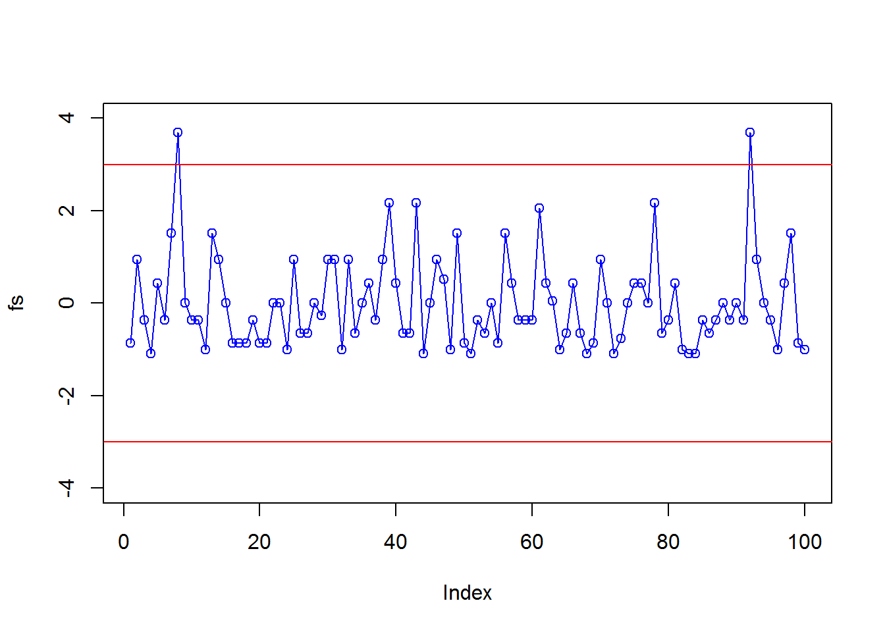
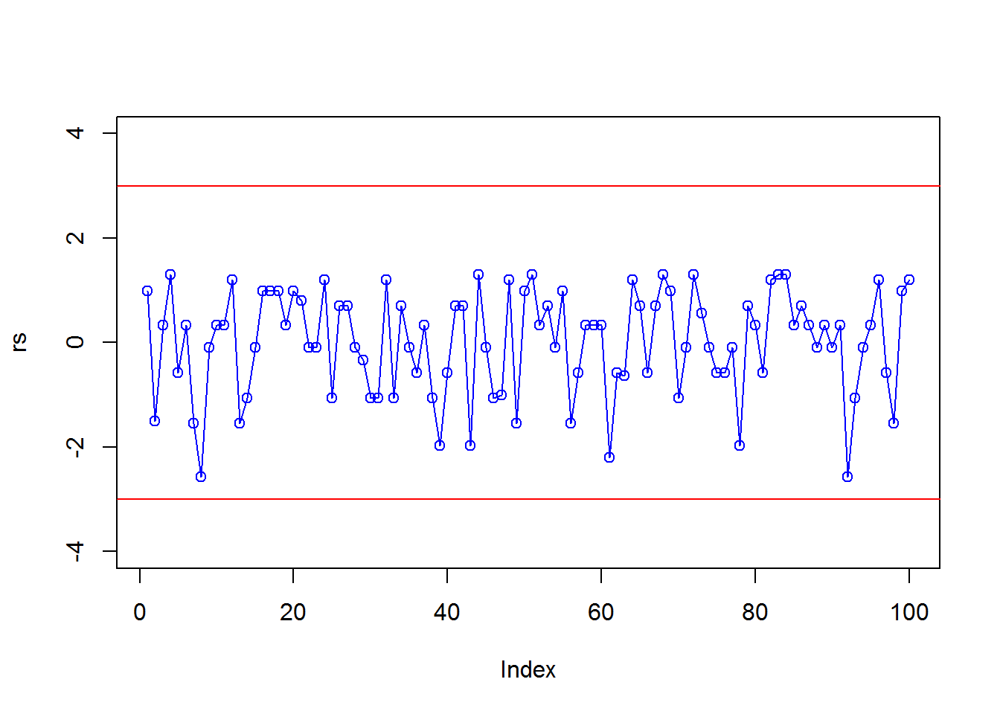
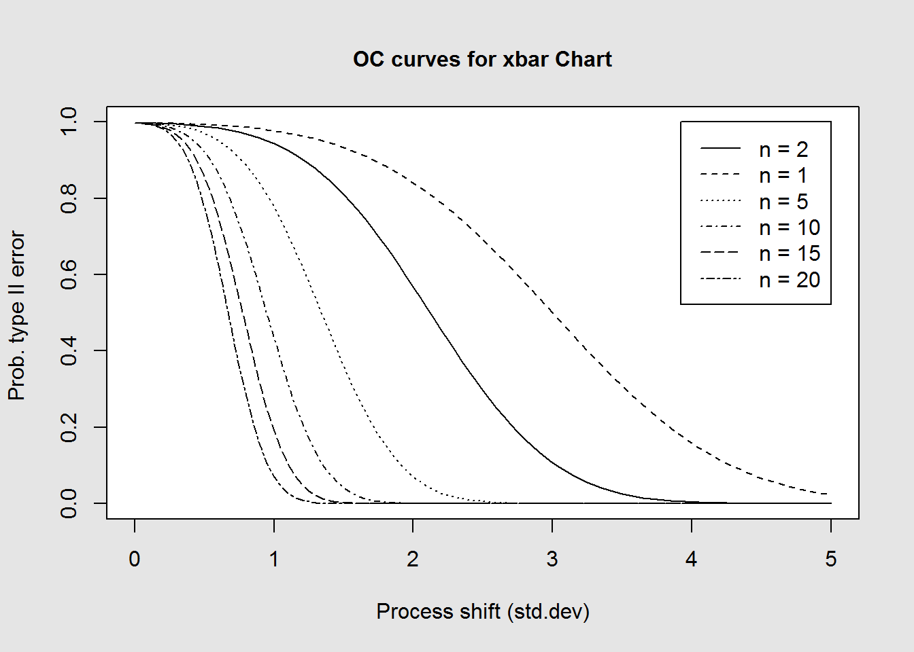
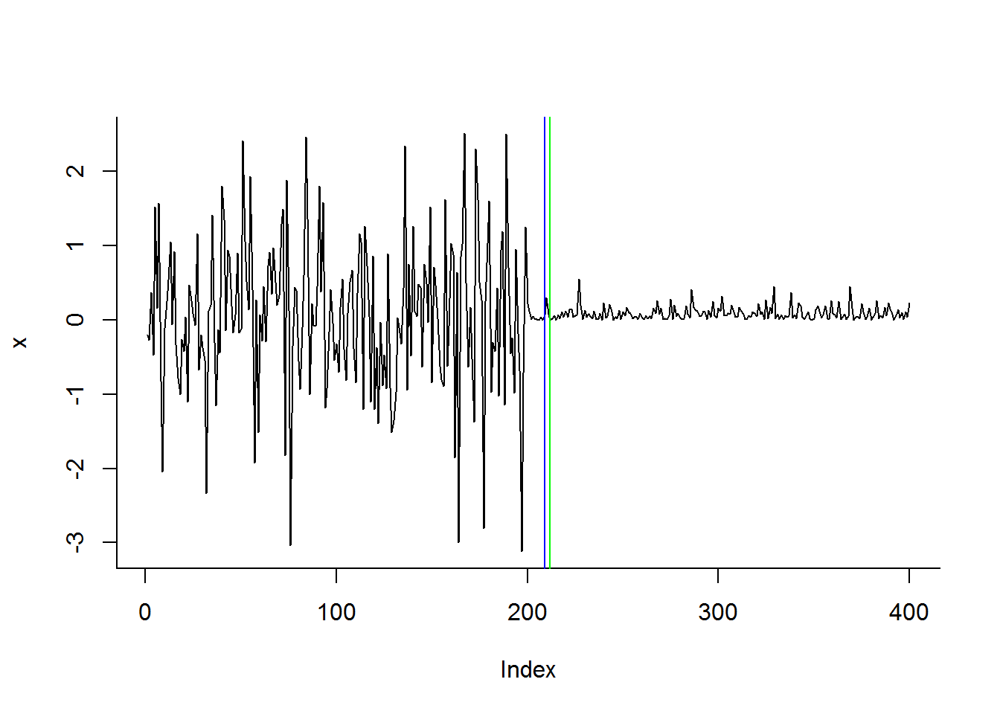

Capítulo 10 Test de Mood
author: “Alexandra Maigua”
10.1 Test de Mood para la dispersión
Mood sugirió un metodo no parametrico para probar la hipotesis nula de igualdad de la varianza en dos muestras aleatorias independientes.Sean \(X=\{X_{1},X_{2}, ... ,X_{m}\}\) y \(Y=\{Y_{1},Y_{2}, ... ,Y_{n}\}\) dos muestras aleatorias, donde \(X_{i}\sim F\), \(i=1,2, ... ,m\) y \(Y_{j}\sim G\), \(j=1,2, ... ,n\) . El estadistico Mood puede ser usado para probar:
\[ H_{0} : V[X] = V[Y]\\ H_{1} : V[X] \neq V[Y] \]
Además,
\[
Z = X \cup Y =\{Z_{(1)},Z_{(2)}, ... ,Z_{(m+n)} \}
\]
\(Z_{(i)}\) es dado por la puntuación de rango de \(i=1,2, ... ,m+n\). El estaditico del test de Mood W es calculado como la suma de los cuadrados de las diferencias entre los rangos de las observaciones en la muestra Y y la media de Z, \(i.e.\)
\[ W=\displaystyle\sum_{i:\mathbb{Z}_{(i)}\in Y} \left(i-\frac{m+n+1}{2}\right)^2 \] Los valores grandes de W indican \(V[Y]>V[X]\) y los valores peque?os que \(V[Y]<V[X]\) Si n y m son suficientemente grandes , por el teorema central del limite, se puede utilizar la aproximacion a la normal, entonces:
El valor esperado y la varianza de W esta dado por:
\[ E[W]= \frac{n((m+n)^2-1}{12} \] y
\[ V[W]= \frac{mn(m+n+1)((m+n)^2-4)}{180} \]
Por tanto, para probar que:
\[ H_{0} : \sigma_{X} = \sigma_{Y}\\ H_{1} : \sigma_{X} \neq \sigma_{Y} \]
Utilizamos:
\[ Z=\frac{W-E[W]}{\sqrt{V[W]}} \] Notemos que rechazamos \(H_{0}\) si:
\[ \left| M-m\frac{(m+n)^2 -1}{12} \right| > z_{\frac{\alpha}{2}}\sqrt{V[W]} \]
para valores pequeños (<30) de m o n, tenemos la siguente fórmula alternativa:
\[ Z=\frac{W-E[W]}{\sqrt{V[W]+\frac{1}{2V[W]}}} \]
Notemos que se debe trabajar bajo los supuestos:- A Los datos consisten en dos muestras aleatorias \(X=\{X_{1},X_{2}, ... ,X_{m}\}\) y \(Y=\{Y_{1},Y_{2}, ... ,Y_{n}\}\)
- Donde \(n = m\)
- Las muestras vienen de distribuciones continuas
- Las dos muestras son independientes
- Las dos distribuciones de deben tener la misma media
10.2 Gráficos de control
El gráfico de control basado en el test de Mood, se lo construye de la siguiente manera:- Considere muestras de tamaño n
- Por cada dos muestras consecutivas, calcule M.
- Determine \(E[M]\) y \(V[M]\)
- Calcule Z para cada par de muestras
- Establezca los parametros del gr?fico de control: \[ LCS=3 \\ LC=0 \\ LCI=-3 \]
- Grafique el valor de z observado en el gráfico de control.Si algún punto va más allí del límite, indicará que el proceso está fuera de control con respecto a la variabilidad.
10.3 Simulación
Utilizamos el siguiente código para obtener los resultados al realizar nuestra prueba
#Inicializamos con muestras x,y
#calculamos z
z<-c(x,y)
z<-sort(z)
#c?lculo de W
u<-vector()
for(j in 1:length(z)){
for(i in 1:length(y)) {
if(z[j]==y[i]){
u[i]<-j}
}
}
u<-sort(u)
for(i in 1:length(u)) {
if(TRUE &&u[i]==u[i+1])
{
u[i+1]<-u[i]-1
}else{u[i+1]<-u[i+1]}
}
w<-sum((u-((m+n+1)/2))^2)
#valor esperado de W
ew<-(n*(((n+m)^2)-1))/12
#varianza de W
vw<-(n*m*(m+n+1)*((m+n)^2 -4))/180
#c?lculo de Z
Z<-(w-ew)/sqrt(vw)
Z<- -Z
#c?lculo de p_valor
pv<- 2*pnorm(-abs(Z))
#resultado del estad?stico
if(pv<a/2)
if(abs(w-m*((m+n)^2 /12))>1.96*sqrt(vw))
{
r<-c("la hipotesis nula se rechaza")
}else{r<-c("la hipotesis nula se acepta")}
res<-data.frame(DATOS=c("z","p_valor","vx<vy","W","resultado"),RESULTADOS=c(Z,pv,var(x)<var(y),w,r))
res
mood.test(x,y,alternative = c("two.sided", "less", "greater"), .).
Entonces:
m<-100
n<-35
mu<-8
X<-matrix(rnorm(n*m,mu,1/mu^2),nrow = m,ncol = n)
Y<-matrix(rexp(n*m,1/mu),nrow = m,ncol = n)
muestra_Z<-function(x,y,m){
z<-vector()
for(i in 1:m){
z[i]<-mood.test(x[i,],y[i,],alternative = c("two.sided", "less", "greater"))$statistic
}
return(z)
}
f<-muestra_Z(X,Y,m)
fs<-(f-mean(f))/sd(f)
#gr?fico de control
plot(fs,type="o",ylim=c(-4,4), col="blue")
abline(h=3, col="red")
abline(h=-3, col="red")
Repetimos el mismo procedimiento, pero con el test de Lepage, entonces:
library(NSM3)
source('lp.r')
muestra_L<-function(X,Y,m){
z<-vector()
for(i in 1:m){
l<-lepage.test(X[i,],Y[i,])
z[i]<-l$obs.stat
}
return(z)
}
r<-muestra_L(X,Y,m)
rs<-(r-mean(r))/sd(r)
plot(rs,type="o",ylim=c(-4,4), col="blue")
abline(h=3, col="red")
abline(h=-3, col="red")
10.4 DESEMPEñO DEL GRáFICO DE CONTROL(ARL)
Una medida popular del rendimiento del gráfico es el valor esperado de la longitud de ejecución (ARL). Es deseable que el ARL de un gráfico sea grande cuando el proceso esté en control. Cuanto mayor sea el valor de la ARL en control, mejor es el desempe?o de la tabla con respecto a falsas alarmas. Esta medida (ARL) está relacionada con la probabilidad \(\alpha\) del error de tipo I. El error de Tipo I es el error que ocurre cuando el gráfico da una señal de fuera de control cuando en realidad el proceso esté en control. Un gráfico de control debe detectar el cambio en el proceso lo más rápido posible y dar una señal fuera de control. Claramente, cuanto más rápida sea la detección correcta, más eficiente es el gráfico.
\[ ARL_{0}=\frac{1}{\alpha} \]
Una segunda medida está dada por \(ARL_{1}\), está asociada con procesos fuera de control, las cuales tienen causas asignables que afectan en gran medida al proceso. Se relaciona con la probabilidad \(\beta\), ocurrencia de un error de Tipo II o la potencia de una prueba \(1-\beta\).
| \(\beta\) | = probabilidad del error tipo II |
| \(\beta\) | = probabilidad de que durante el estado fuera de control un punto se encuentre dentro de los límites de control |
| \(\beta\) | = probabilidad de que la gráfica de control no detecte un cambio |
| \(1-\beta\) | = probabilidad de que durante el estado fuera de control haya un punto fuera los límites de control |
| \(1-\beta\) | = probabilidad de que la gráfica de control tenga éxito para detectar un cambio |
Asi tenemos, la detección de fuera de control dada por: \[ ARL_{1}=\frac{1}{1-\beta} \] Para aumentar la potencia de los gráficos de control (probabilidad de detectar los errores), es necesario tener tamaños de muestras grandes, los cuales detectaran cambios más pequeños en el proceso que se desea controlar o tener especificaciones no tan estrictas para el calculo posterior de la tolerencia del proceso.

10.5 CPM(Change Point Model)
En los últimos años se ha visto el surgimiento del marco de CPM(modelo del punto de cambio), que extiende el uso de métodos de detección de lotes basados en la verosimilitud al problema del monitoreo secuencial. Los orígenes El trabajo final sobre el CPM fue presentado por Hawkins que se centra en el problema de la detección secuencial de un cambio en la media de una secuencia de variables aleatorias gaussianas. Desde entonces, esto se ha extendido en muchas direcciones para permitir que se realicen cambios de tipos más complejos. detectados, incluyendo aquellos en las corrientes donde la distribución subyacente es desconocida. El paquete R de Cpm contiene una implementación de varios CPM diferentes, ambos paramátricos y no paramátrico, para uso en flujos univariados en la configuración de Fase I y Fase II. Específicamente, implementa el marco de CPM utilizando e Student-t, Bartlett, GLR, Fisher’s exact test, Exponential, Mann-Whitney, Mood, Lepage, Kolmogorov-Smirnov, y Cramervon-Mises . Los tres primeros están destinados a detectar cambios en secuencias que son conocido por ser gaussiano, el cuarto se usa para las secuencias de Bernoulli, el quinto para la secuencia exponencial en tanto que las estadísticas restantes no son paramétricos y se pueden implementar en cualquier secuencia de variables aleatorias continuas sin requerir ningún conocimiento previo de su distribución.
library(cpm)
x <- c(rnorm(200, 0.1, 1), rexp(200,1/0.1))
resultsM <- detectChangePoint(x, cpmType = "Mood", ARL0 = 500)
resultsL<- detectChangePoint(x, cpmType = "Lepage", ARL0 = 500)
plot(x, type = "l", bty = "l")
if (resultsM$changeDetected)
abline(v = resultsM$detectionTime, col = "blue")
if (resultsL$changeDetected)
abline(v = resultsL$detectionTime, col = "green") El rendimiento del CPM paramátrico que utiliza la prueba de Bartlett para detectar un cambio en la varianza de una muestra gaussiana, lo comparamos con varios métodos no paramátricos diferentes. Para un valor fijo de \(ARL_{0}\). Consideramos muestras normales \[ x\sim N(0,1)\\ y\sim N(0,\delta) \] con \(\delta =\{.5,2.0,3.0,0.5,0,0.3\}\) y \(n=\{50,300\}\) Así obtenemos el resultado promediado de 100 simulaciones,se puede ver que, como se esperaba, los cambios grandes son más fáciles de detectar que los cambios más pequeños, y los cambios que ocurren después de la observación 300 son más fáciles de detectar que los que ocurren después del 50, ya que el tamaño de la muestra es mayor. En general, el CPM paramétrico supera a los métricas de CPM, lo cual es comprensible ya que incorpora el conocimiento de que las observaciones son gaussianos. Curiosamente, para cambios con magnitudes más pequeñas, los CPM no paramétricos son superiores.
set.seed(0)
library(cpm)
cpmTypes <- c("Bartlett","Mood","Lepage")
delta <- c(1.5, 2.0, 3.0, 0.5, 0.3)
n <- c(50, 300)
sims <- 100
ARL0 <- 500
startup <- 20
resultados<-function(cpmTypes,delta,n,sims,ARL0,startup){
results <- list()
for (cpmType in cpmTypes) {
results[[cpmType]] <- matrix(numeric(length(delta) *length(n)), nrow = length(delta))
for (cm in 1:length(delta))
{
for (cl in 1:length(n))
{
temp <- numeric(sims)
for (s in 1:sims)
{
x <-c(rnorm(n[cl], 0, 1), rnorm(n[cl], 0,delta[cm]))
temp[s] <-detectChangePoint(x, cpmType, ARL0=ARL0, startup=startup)$detectionTime
}
results[[cpmType]][cm,cl] <- mean(temp[temp > n[cl]])- n[cl]
}
}
}
return(results)
}
a<-resultados(cpmTypes,delta,n,sims,ARL0,startup)
resultados1<-data.frame(delta,a$Bartlett[,1],a$Mood[,1],a$Lepage[,1])
colnames(resultados1)<-c("Delta","Bartlett","Mood","Lepage")
resultados2<-data.frame(delta,a$Bartlett[,2],a$Mood[,2],a$Lepage[,2])
colnames(resultados2)<-c("Delta","Bartlett","Mood","Lepage")## Delta Bartlett Mood Lepage
## 1 1.5 21.075000 21.12903 19.358491
## 2 2.0 13.637363 15.15556 15.230769
## 3 3.0 6.377778 7.87234 9.626374
## 4 0.5 18.056818 24.98810 30.810345
## 5 0.3 7.827957 13.25556 18.894737## Delta Bartlett Mood Lepage
## 1 1.5 28.578947 23.588235 33.066667
## 2 2.0 9.638298 10.582090 12.648148
## 3 3.0 3.886792 5.916667 8.236364
## 4 0.5 15.875000 22.389831 29.769231
## 5 0.3 8.705882 12.250000 17.13559310.6 Conclusiones
- Los métodos no paramétricos, son de gran ayuda cuando desconocemos cual es la distribucion de los datos con los que estamos trabajando.
- Apesar de que el test de Mood sea un método no paramétrico, para trabajar con este necesitamos de ciertos supuestos, como: -tamaños de muestras iguales -la distribución de las muestras de be ser continua -las muestras deben tener la misma media. *Mediante el método de cambio de puntos(CPM) con un \(ARL_{0}=500\) y con muetras de distribución normal, los métodos no parametricos son mejores cuando tenemos una variación pequeña.
10.7 Referencias
- Non-parametric Statistical Process Control
- Parametric and Nonparametric Sequential Change Detection in R
- Control Charts
- Lepage test
- Tests para igualdad de varianzas
- An R packege for quality control charting and statistical process control
- Non-parametric Control Chart for Controlling Variability Based on Rank Test